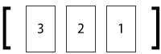
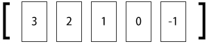
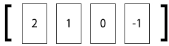
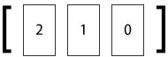

3.4 列表类型
正当小白踌躇满志地写着文章列表页的代码时，一个很重要的问题阻碍了他的开发，于是他请来了宋老师为他讲解。
原来小白是使用如下流程获得文章列表的：
● 读取 posts:count键获得博客中最大的文章ID；
● 根据这个 ID 来计算当前列表页面中需要展示的文章 ID 列表（小白规定博客每页只显示10篇文章，按照ID的倒序排列），如第n页的文章ID范围是从最大的文章ID - (n - 1) * 10"到"max(最大的文章 ID - n * 10 + 1, 1)"；
● 对每个ID 使用 HMGET命令来获得文章数据。
对应的伪代码如下：
# 每页显示 10 篇文章
$postsPerPage = 10
# 获得最后发表的文章 ID
$lastPostID = GET posts:count
# $currentPage 存储的是当前页码，第一页时$currentPage的值为 1，依此类推
$start = $lastPostID - ($currentPage - 1) * $postsPerPage
$end = max($lastPostID - $currentPage * $postsPerPage + 1, 1)
# 遍历文章 ID 获取数据
for $i = $start down to $end
# 获取文章的标题和作者并打印出来
post = HMGET post:$i, title, author
print $post[0] # 文章标题
print $post[1] # 文章作者
可是这种方式要求用户不能删除文章以保证 ID 连续，否则小白就必须在程序中使用EXISTS命令判断某个ID的文章是否存在，如果不存在则跳过。由于每删除一篇文章都会影响后面的页码分布，为了保证每页的文章列表都能正好显示10篇文章，不论是第几页，都不得不从最大的文章ID开始遍历来获得当前页面应该显示哪些文章。
小白摇了摇头，心想：“真是个灾难！”然后看向宋老师，试探地问道：“我想到了KEYS命令，可不可以使用 KEYS命令获得所有以“post:”开头的键，然后再根据键名分页呢？”
宋老师回答道：“确实可行，不过KEYS命令需要遍历数据库中的所有键，出于性能考虑一般很少在生产环境中使用这个命令。至于你提到的问题，可以使用 Redis 的列表类型来解决。”
列表类型（list）可以存储一个有序的字符串列表，常用的操作是向列表两端添加元素，或者获得列表的某一个片段。
列表类型内部是使用双向链表（double linked list）实现的，所以向列表两端添加元素的时间复杂度为O(1)，获取越接近两端的元素速度就越快。这意味着即使是一个有几千万个元素的列表，获取头部或尾部的10条记录也是极快的（和从只有20个元素的列表中获取头部或尾部的10条记录的速度是一样的）。
不过使用链表的代价是通过索引访问元素比较慢，设想在 iPad mini 发售当天有1000个人在三里屯的苹果店排队等候购买，这时苹果公司宣布为了感谢大家的排队支持，决定奖励排在第486 位的顾客一部免费的iPad mini。为了找到这第486 位顾客，工作人员不得不从队首一个一个地数到第 486 个人。但同时，无论队伍多长，新来的人想加入队伍的话直接排到队尾就好了，和队伍里有多少人没有任何关系。这种情景与列表类型的特性很相似。
这种特性使列表类型能非常快速地完成关系数据库难以应付的场景：如社交网站的新鲜事，我们关心的只是最新的内容，使用列表类型存储，即使新鲜事的总数达到几千万个，获取其中最新的100条数据也是极快的。同样因为在两端插入记录的时间复杂度是O(1)，列表类型也适合用来记录日志，可以保证加入新日志的速度不会受到已有日志数量的影响。
借助列表类型，Redis还可以作为队列使用，4.4节会详细介绍。
与散列类型键最多能容纳的字段数量相同，一个列表类型键最多能容纳232−1个元素。
1．向列表两端增加元素
LPUSH key value [value …]
RPUSH key value [value …]
LPUSH命令用来向列表左边增加元素，返回值表示增加元素后列表的长度。
redis> LPUSH numbers 1
(integer) 1
这时numbers键中的数据如图3-8所示。LPUSH命令还支持同时增加多个元素，例如：
redis> LPUSH numbers 2 3
(integer) 3
LPUSH会先向列表左边加入"2"，然后再加入"3"，所以此时numbers键中的数据如图3-9所示。
图3-8 加入元素1 后 numbers 键中的数据

图3-9 加入元素2，3后 numbers 键中的数据
向列表右边增加元素的话则使用RPUSH命令，其用法和LPUSH命令一样：
redis> RPUSH numbers 0 −1
(integer) 5
此时numbers键中的数据如图3-10所示。

图3-10 使用 RPUSH 命令加入元素0，-1后 numbers 键中的数据
2．从列表两端弹出元素
LPOP key
RPOP key
有进有出，LPOP命令可以从列表左边弹出一个元素。LPOP命令执行两步操作：第一步是将列表左边的元素从列表中移除，第二步是返回被移除的元素值。例如，从 numbers列表左边弹出一个元素（也就是"3"）：
redis> LPOP numbers
"3"
此时numbers键中的数据如图3-11所示。
同样，RPOP命令可以从列表右边弹出一个元素：
redis> RPOP numbers
"-1"
此时numbers键中的数据如图3-12所示。
结合上面提到的 4 个命令可以使用列表类型来模拟栈和队列的操作：如果想把列表当做栈，则搭配使用LPUSH和LPOP或RPUSH和RPOP，如果想当成队列，则搭配使用LPUSH和RPOP或RPUSH和LPOP。

图3-11 从左侧弹出元素后numbers键中的数据

图3-12 从右侧弹出元素后numbers键中的数据
3．获取列表中元素的个数
LLEN key
当键不存在时LLEN会返回0：
redis> LLEN numbers
(integer) 3
LLEN 命令的功能类似SQL语句 SELECT COUNT(*) FROM table_name，但是 LLEN的时间复杂度为O(1)，使用时Redis会直接读取现成的值，而不需要像部分关系数据库（如使用InnoDB存储引擎的MySQL表）那样需要遍历一遍数据表来统计条目数量。
4．获得列表片段
LRANGE key start stop
LRANGE命令是列表类型最常用的命令之一，它能够获得列表中的某一片段。LRANGE命令将返回索引从 start到 stop之间的所有元素（包含两端的元素）。与大多数人的直觉相同，Redis的列表起始索引为0：
redis> LRANGE numbers 0 2
1) "2"
2) "1"
3) "0"
LRANGE命令在取得列表片段的同时不会像LPOP一样删除该片段，另外LRANGE命令与很多语言中用来截取数组片段的方法slice有一点区别是LRANGE返回的值包含最右边的元素，如在JavaScript中：
var numbers = [2, 1, 0];
console.log(numbers.slice(0, 2)); //返回数组：[2, 1]
LRANGE命令也支持负索引，表示从右边开始计算序数，如"−1"表示最右边第一个元素，"-2"表示最右边第二个元素，依次类推：
redis> LRANGE numbers -2 -1
1) "1"
2) "0"
显然，LRANGE numbers 0 -1 可以获取列表中的所有元素。另外一些特殊情况如下。
1．如果start的索引位置比stop的索引位置靠后，则会返回空列表。
2．如果stop大于实际的索引范围，则会返回到列表最右边的元素：
redis> LRANGE numbers 1 999
1) "1"
2) "0"
5．删除列表中指定的值
LREM key count value
LREM命令会删除列表中前count个值为value的元素，返回值是实际删除的元素个数。根据count值的不同，LREM命令的执行方式会略有差异。
（1）当 count > 0时 LREM 命令会从列表左边开始删除前 count 个值为 value的元素。
（2）当 count < 0时 LREM 命令会从列表右边开始删除前|count|个值为 value 的元素。
（3）当 count = 0是 LREM命令会删除所有值为 value的元素。例如：
redis> RPUSH numbers 2
(integer) 4
redis> LRANGE numbers 0 -1
1) "2"
2) "1"
3) "0"
4) "2"
# 从右边开始删除第一个值为"2"的元素
redis> LREM numbers -1 2
(integer) 1
redis> LRANGE numbers 0 -1
1) "2"
2) "1"
3) "0"
1．存储文章ID列表
为了解决小白遇到的问题，我们使用列表类型键posts:list记录文章ID列表。当发布新文章时使用LPUSH命令把新文章的ID加入这个列表中，另外删除文章时也要记得把列表中的文章ID 删除，就像这样：LREM posts:list 1 要删除的文章 ID
有了文章 ID列表，就可以使用 LRANGE命令来实现文章的分页显示了。伪代码如下：
$postsPerPage = 10
$start = ($currentPage - 1) * $postsPerPage
$end = $currentPage * $postsPerPage - 1
$postsID = LRANGE posts:list, $start, $end
# 获得了此页需要显示的文章 ID列表，我们通过循环的方式来读取文章
for each $id in $postsID
$post = HGETALL post:$id
print 文章标题：$post.title
这样显示的文章列表是根据加入列表的顺序倒序的（即最新发布的文章显示在前面），如果想让最旧的文章显示在前面，可以使用LRANGE命令获取需要的部分并在客户端中将顺序反转显示出来，具体的实现交由读者来完成。
小白的问题至此就解决了，美中不足的一点是散列类型没有类似字符串类型的 MGET命令那样可以通过一条命令同时获得多个键的键值的版本，所以对于每个文章ID都需要请求一次数据库，也就都会产生一次往返时延（round-trip delay time）[11] ，之后我们会介绍使用管道和脚本来优化这个问题。
另外使用列表类型键存储文章ID列表有以下两个问题。
（1）文章的发布时间不易修改：修改文章的发布时间不仅要修改post:文章ID中的time字段，还需要按照实际的发布时间重新排列posts:list中的元素顺序，而这一操作相对比较繁琐。
（2）当文章数量较多时访问中间的页面性能较差：前面已经介绍过，列表类型是通过链表实现的，所以当列表元素非常多时访问中间的元素效率并不高。
但如果博客不提供修改文章时间的功能并且文章数量也不多时，使用列表类型也不失为一种好办法。对于小白要做的博客系统来讲，现阶段的成果已经足够实用且值得庆祝了。3.6节将介绍使用有序集合类型存储文章ID列表的方法。
2．存储评论列表
在博客中还可以使用列表类型键存储文章的评论。由于小白的博客不允许访客修改自己发表的评论，而且考虑到读取评论时需要获得评论的全部数据（评论者姓名，联系方式，评论时间和评论内容），不像文章一样有时只需要文章标题而不需要文章正文。所以适合将一条评论的各个元素序列化成字符串后作为列表类型键中的元素来存储。
我们使用列表类型键 post:文章ID:comments来存储某个文章的所有评论。发布评论的伪代码如下（以ID为42的文章为例）：
# 将评论序列化成字符串
$serializedComment = serialize($author, $email, $time, $content)
LPUSH post:42:comments, $serializedComment
读取评论时同样使用LRANGE命令即可，具体的实现在此不再赘述。
1．获得/设置指定索引的元素值
LINDEX key index
LSET key index value
如果要将列表类型当作数组来用，LINDEX命令是必不可少的。LINDEX命令用来返回指定索引的元素，索引从0开始。如：
redis> LINDEX numbers 0
"2"
如果index是负数则表示从右边开始计算的索引，最右边元素的索引是−1。例如：
redis> LINDEX numbers -1
"0"
LSET是另一个通过索引操作列表的命令，它会将索引为index的元素赋值为value。例如：
redis> LSET numbers 1 7
OK
redis> LINDEX numbers 1
"7"
2．只保留列表指定片段
LTRIM key start end
LTRIM 命令可以删除指定索引范围之外的所有元素，其指定列表范围的方法和LRANGE命令相同。就像这样：
redis> LRANGE numbers 0 -1
1) "1"
2) "2"
3) "7"
4) "3"
"0"
redis> LTRIM numbers 1 2
OK
redis> LRANGE numbers 0 1
1) "2"
2) "7"
LTRIM命令常和LPUSH命令一起使用来限制列表中元素的数量，比如记录日志时我们希望只保留最近的100条日志，则每次加入新元素时调用一次LTRIM命令即可：
LPUSH logs $newLog
LTRIM logs 0 99
3．向列表中插入元素
LINSERT key BEFORE|AFTER pivot value
LINSERT 命令首先会在列表中从左到右查找值为 pivot 的元素，然后根据第二个参数是BEFORE还是AFTER来决定将value插入到该元素的前面还是后面。
LINSERT命令的返回值是插入后列表的元素个数。示例如下：
redis> LRANGE numbers 0 -1
1) "2"
2) "7"
3) "0"
redis> LINSERT numbers AFTER 7 3
(integer) 4
redis> LRANGE numbers 0 -1
1) "2"
2) "7"
3) "3"
4) "0"
redis> LINSERT numbers BEFORE 2 1
(integer) 5
redis> LRANGE numbers 0 -1
1) "1"
2) "2"
3) "7"
4) "3"
5) "0"
4．将元素从一个列表转到另一个列表
RPOPLPUSH source destination
RPOPLPUSH是个很有意思的命令，从名字就可以看出它的功能：先执行RPOP命令再执行LPUSH命令。RPOPLPUSH命令会先从source列表类型键的右边弹出一个元素，然后将其加入到destination列表类型键的左边，并返回这个元素的值，整个过程是原子的。其具体实现可以表示为伪代码：
def rpoplpush ($source, $destination)
$value = RPOP $source
LPUSH $destination, $value
return $value
当把列表类型作为队列使用时，RPOPLPUSH 命令可以很直观地在多个队列中传递数据。当source和destination相同时，RPOPLPUSH命令会不断地将队尾的元素移到队首，借助这个特性我们可以实现一个网站监控系统：使用一个队列存储需要监控的网址，然后监控程序不断地使用 RPOPLPUSH 命令循环取出一个网址来测试可用性。这里使用RPOPLPUSH命令的好处在于在程序执行过程中仍然可以不断地向网址列表中加入新网址，而且整个系统容易扩展，允许多个客户端同时处理队列。